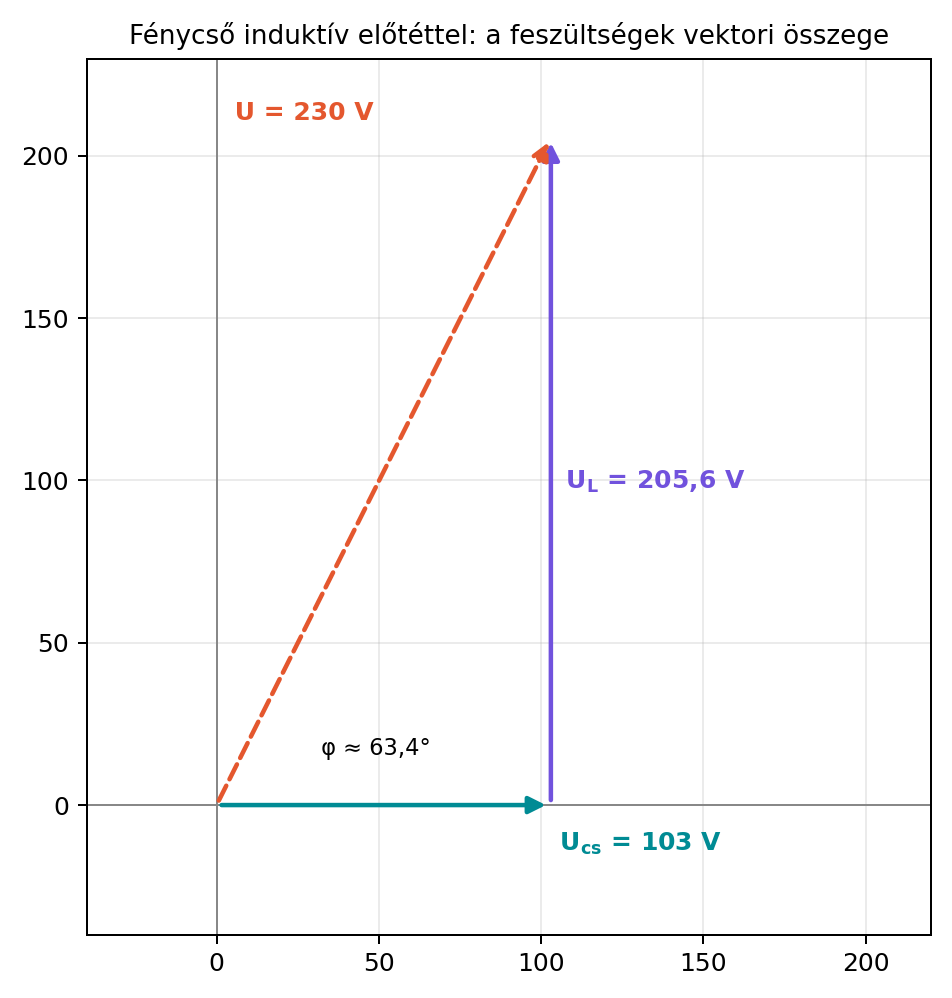
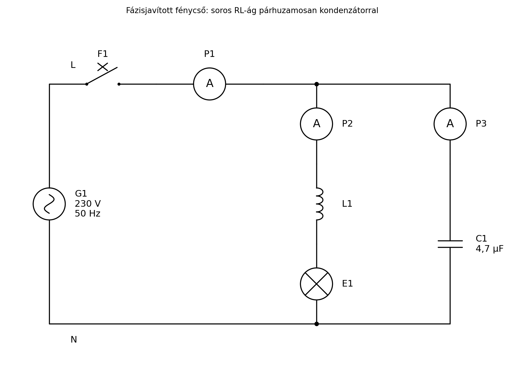
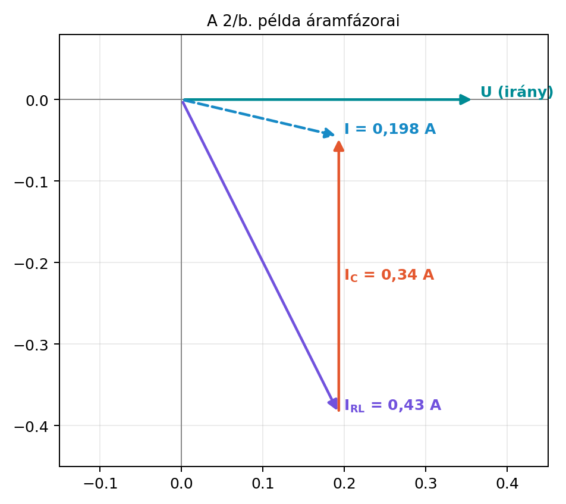

6.3 Impedancia, soros és párhuzamos
RLC, rezonancia
A kapcsolódó elmélet: tankönyv, 6.3 alfejezet.
6.3.1 Számítási példák
0. példa (A) – fénycső induktív előtéttel. Tanulási
modell: a fénycső ohmos ellenállás, a fojtó ideális tekercs. Adott
(szemléltető mért értékek, ellenőrizendő: gyártói adatlap):
,
;
a fénycső kapcsain mért feszültség
,
az áram
.
Keresett: a fojtó feszültsége,
,
,
,
,
.
Megoldás. A fénycső feszültsége az árammal fázisban
van, a fojtóé 90°-kal siet, ezért a két feszültség merőleges egymásra,
és derékszögű háromszöget alkot a hálózati feszültséggel:
Nem
!
A további értékek:
;
;
;
(egyezik:
);
,
(induktív).
Ellenőrzés:
.
A „skaláris” összeg,
,
nagyobb a hálózati feszültségnél, tehát nem lehet helyes. ∎

Fénycső induktív előtéttel: a
feszültségek vektori összege - Az áram a vízszintes referencia. U_cs =
103 V (a fénycső) vízszintes, a végpontjából U_L = 205,6 V (a fojtó)
felfelé, az eredő U = 230 V (szaggatott) az átfogó; φ ≈
63,4°.
Valós eset – kapcsolat. A menetzárlatos fojtónál
(tankönyv, 6.2) az
lecsökken, ezért az áram megnő, a cső és a fojtó túlterhelődik, a lámpa
rendellenesen működik vagy nem gyújt. A kb.
-os
teljesítménytényező javítását a 2/b. példa és a Teljesítmények és
teljesítménytényező (tankönyv, 6.4) alfejezet mutatja.
1. példa (A) – soros RLC-kör. Adott:
,
,
,
a tápfeszültség
,
frekvencia
.
Keresett: az áram, az egyes feszültségek és a fázisszög.
Megoldás. Először a körfrekvencia:
A reaktanciák:
Az eredő reaktancia:
Az impedancia:
Az áram:
A fázisszög:
Mivel
,
a kör induktív, az áram késik. A feszültségek:
Ellenőrzés: a fázorfeszültség nagysága
,
ami visszaadja a tápfeszültséget. ∎
2. példa (B) – párhuzamos RLC-kör. Adott:
,
,
,
,
.
Keresett: az eredő áram, az admittancia és a fázisszög.
Megoldás. A körfrekvencia
.
A konduktancia:
A szuszceptanciák:
Az eredő szuszceptancia:
Az admittancia nagysága:
Az eredő áram:
A fázisszög:
A pozitív szög azt jelzi, hogy az áram késik a feszültséghez képest,
azaz a kör induktív jellegű (ugyanaz az előjelkonvenció, mint a soros
körnél). ∎
2/b. példa (B) – RL-ág és kondenzátor párhuzamosan.
Ez a leggyakoribb vegyes kapcsolás: a 0. példa fénycsöve (soros RL-ág)
mellé fázisjavító kondenzátort kötünk. Adott:
,
(induktív),
(a kapacitív reaktancia (tankönyv, 6.2) példájának kondenzátora),
,
.

Fázisjavított fénycső: soros RL-ág
párhuzamosan kondenzátorral - L1 a fojtó, E1 a fénycső (modellben ohmos
ellenállás), C1 = 4,7 µF. P1 a főág árama (kb. 0,20 A), P2 az RL-ágé
(0,43 A), P3 a kondenzátoré (0,34 A). Elvi rajz: a gyújtó és a kisütő
ellenállás nincs ábrázolva.
Megoldás. Az ágáramokat vízszintes (a feszültséggel
fázisban lévő, hatásos) és függőleges (meddő) összetevőre bontjuk.
Az RL-ág:
;
(induktív, késik).
A kondenzátor:
(kapacitív, 90°-kal siet).
Az eredő meddő áram
,
még induktív. A főág árama:
,
(induktív).
.
Teljes kompenzációhoz
kellene:
.
∎

A 2/b. példa áramfázorai - A feszültség a
vízszintes referencia. I_RL = 0,43 A 63,4°-kal késik; a végpontjából
felfelé I_C = 0,34 A; az eredő I ≈ 0,198 A (szaggatott) kis szöggel
(13,1°) marad a vízszintes alatt.
Tanulság. A hálózatból felvett áram
-ről
kb.
-re
csökken, miközben a fénycsövön és a fojtón változatlanul
folyik, és a hatásos áram sem változik. Az ágáramok számtani összege
()
nem a főág árama
():
lakatfogóval mérve ez meglepő, de helyes.
3. példa (C) – rezonanciafrekvencia. Adott:
,
.
Keresett: a rezonanciafrekvencia.
Megoldás.
Ez azt jelenti, hogy ezen a frekvencián a soros kör impedanciája
minimális, a párhuzamos köré pedig maximális. ∎
6.3.2 Gyakorlati útmutató: soros
RLC-kör mérése tanműhelyben
Cél: állíts össze soros RLC-kört, mérd meg az
impedanciáját, és határozd meg a rezonanciafrekvenciát.
Eszközök és anyagok: függvénygenerátor (szinuszos
kimenet), digitális multiméter (TRMS), oszcilloszkóp, két mérőzsinór,
egy
-os
ellenállás, egy
-os
(légréses vagy vasmag nélküli, kis ohmos ellenállású) tekercs, egy
-os
fólia- (MKP) vagy bipoláris (nem polarizált) motorkondenzátor;
polarizált elektrolitkondenzátor nem használható, próbapanel,
jegyzőkönyv. Ezekkel
,
,
;
a várt áram
-on:
-en
kb.
,
-en
kb.
,
-nál
.
A generátor belső ellenállása (pl.
)
soros ellenállásként viselkedik, és laposítja a görbét; ezért a
kapcsokon mért feszültséget tartsd
-on.
Biztonsági korlát. A feladat tanműhelyi,
törpefeszültségű környezetre vonatkozik; hálózati feszültségen önállóan
ne végezd. A függvénygenerátor kimeneti feszültsége legfeljebb 12 V
effektív, a kimenetet ne zárd rövidre.
Lépések:
Kapcsold ki a függvénygenerátort, és állítsd a kimeneti feszültséget
5 V effektív értékre, frekvenciát 100 Hz-re.
Kösd sorba az ellenállást, a tekercset és a kondenzátort a
próbapanelen, a generátor kimenetére.
Ellenőrizd a kapcsolást: a generátort lecsatlakoztatva mérd meg
ohmmérővel az R és az L sorosan kötött szakaszát (néhány tíz–száz Ω), a
kondenzátort pedig külön kapacitásmérővel. A teljes soros RLC-kör
egyenáramon szakadást mutat, ez helyes, mert a kondenzátor egyenáramon
nem vezet.
Kapcsold be a generátort, és mérd meg a generátor kimeneti
feszültségét és a körben folyó áramot (a multimétert sorba kötve, vagy
áramváltós lakatfogóval).
Számold ki az impedanciát
képlettel. Írd be a jegyzőkönyvbe.
Mérd meg külön a tekercs és a kondenzátor feszültségét, valamint az
ellenállás feszültségét. Ellenőrizd, hogy a fázorfeszültség-összeg
közelítőleg visszaadja a generátorfeszültséget.
Változtasd a frekvenciát 50 Hz-től 500 Hz-ig, és minden mérési
ponton jegyezd fel az áramot. A rezonanciafrekvenciánál az áram
maximális lesz – ezt a pontot azonosítsd.
Kapcsold ki a generátort, és ellenőrizd a mérési összeállítást:
semmi ne melegedjen, a kondenzátor ne legyen duzzadt.
Ellenőrzési pontok: A rezonanciafrekvencián a mért
impedancia közelítőleg
nagyságú. A fázorösszegzés hibája ne haladja meg a műszer pontosságából
adódó néhány százalékot.
Tipikus hibák a mérés során: a tekercset és a
kondenzátort párhuzamosan kötöd; a multimétert feszültség-állásban
hagyod és áramot próbálsz mérni; a generátor kimenetét túl nagyra
állítod, és a jel levágódik. Mindegyik hibát azonnal javítsd, mielőtt
továbblépnél.
Dokumentálás: rögzítsd a műszer típusát, a
beállításokat, a mért értékeket és a számított impedanciát. A
jegyzőkönyv legyen olyan, hogy később bárki megismételhesse a
mérést.
6.3.3 Önellenőrzés
Igaz-e, hogy soros RLC-körben rezonancián az impedancia maximális?
Indokold!
Számítsd ki a rezonanciafrekvenciát, ha
és
.
Egy soros körben
,
,
.
Mekkora az impedancia és a fázisszög?
Párhuzamos körben
,
,
.
Az áram siet vagy késik a feszültséghez képest?
Mi a különbség a soros és a párhuzamos rezonancia között az
impedancia szempontjából?
Miért veszélyes a kondenzátorok hálózati rezonanciája az ipari
hálózatban?
6.3.4 Megoldások –
Önellenőrzés
Hamis. Soros RLC-körben rezonancián az impedancia
minimális, éppen
,
ezért az áram maximális.
.
,
,
,
induktív jelleg.
,
tehát az áram késik, a kör induktív jellegű
().
Soros rezonanciánál az impedancia minimális, az áram maximális;
párhuzamosnál az impedancia maximális, a főág árama minimális.
A kondenzátor és a hálózati induktivitás párhuzamos rezgőkört
alkothat, amely harmonikus frekvencián áramrezonanciát okoz, túlárammal
és túlmelegedéssel.
6.3.5 Gyakorló generátor:
RLC-körök
Az RLC-számítás többlépéses, és a tipikus hibák
(
az előjeles különbség helyett, a feszültségek számtani összeadása, mH és
µF átváltása, párhuzamos körben impedanciák összeadása, a
előjele) csak sok gyakorlással kophatnak ki. A HTML-kiadás generátora
négy szinten ad véletlen feladatot kapcsolási rajzzal: (A) soros RL vagy
RC; (B) teljes soros RLC részfeszültségekkel és előjeles fázisszöggel;
(C) párhuzamos RLC admittanciával és rezonanciafrekvenciával; (D) vegyes
kapcsolás (RL-ág párhuzamosan kondenzátorral, illetve ellenállás
párhuzamosan soros LC-ággal). A beírt eredményt ±1 %-kal (a szöget
±0,5°-kal) ellenőrzi, a tipikus hibát felismeri, és ha egy
részfeszültség nagyobb a tápfeszültségnél, figyelmeztet: ez rezonancia
közelében helyes eredmény. Az alábbi mintakártya a fejezet 1. példáját
mutatja a generátor lépéseivel.
Statikus változat (mint a PDF-ben)
Mintafeladat az RLC-generátorból: soros RLC-kör lépésenkénti
megoldással (a fejezet 1. példája)
A rögzített sor 3. és 4. feladatában a kondenzátor, illetve a tekercs
feszültsége nagyobb a tápfeszültségnél – számold ki, és magyarázd meg a
fázorábrával, miért nem mond ez ellent a huroktörvénynek.
Rögzített feladatsor. A HTML-kiadás gyakorlója
végtelen sok hasonló feladatot ad; az alábbi hét feladat rögzített (az
1. a fejezet 1. példája, a 7. a fázisjavított fénycső modellje), a
megoldókulcs a sor végén található.
(B) Soros RLC-kör: U = 12 V, f = 200 Hz, R = 47 Ω,
L = 100 mH, C = 22 µF. Mekkora Z, I, UR, UL,
UC és φ (előjellel)?
(B) Soros RLC-kör: U = 5 V, f = 50 Hz, R = 100 Ω, L
= 100 mH, C = 10 µF. Mekkora Z, I, UR, UL,
UC és φ (előjellel)?
(B) Soros RLC-kör: U = 24 V, f = 50 Hz, R = 10 Ω, L
= 50 mH, C = 100 µF. Mekkora Z, I, UR, UL,
UC és φ (előjellel)?
(B) Soros RLC-kör: U = 24 V, f = 1000 Hz, R = 22 Ω,
L = 5 mH, C = 2 µF. Mekkora Z, I, UR, UL,
UC és φ (előjellel)?
(C) Párhuzamos RLC-kör: U = 230 V, f = 50 Hz, R =
100 Ω, L = 500 mH, C = 10 µF. Mekkora Y, I, φ (előjellel) és a
rezonanciafrekvencia?
(C) Párhuzamos RLC-kör: U = 230 V, f = 50 Hz, R = 1
kΩ, L = 100 mH, C = 20 µF. Mekkora Y, I, φ (előjellel) és a
rezonanciafrekvencia?
(D) Vegyes kapcsolás: soros RL-ág (R és L)
párhuzamosan egy kondenzátorral; U = 230 V, f = 50 Hz, R = 240 Ω, L =
1,52 H, C = 4,7 µF. Mekkora az RL-ág és a kondenzátor árama, a főágáram
és a cos φ?
Megoldókulcs.
A rögzített feladatsor megoldókulcsa
Feladat
Szint
Eredmény
1.
B
Z = 101 Ω; I = 119 mA; UR = 5,58 V; UL = 14,9
V; UC = 4,29 V; φ = 62,3°
2.
B
Z = 304 Ω; I = 16,5 mA; UR = 1,65 V; UL = 517
mV; UC = 5,24 V; φ = −70,8°
3.
B
Z = 19 Ω; I = 1,26 A; UR = 12,6 V; UL = 19,9
V; UC = 40,3 V; φ = −58,2°
4.
B
Z = 52,9 Ω; I = 453 mA; UR = 9,97 V; UL = 14,2
V; UC = 36,1 V; φ = −65,4°
5.
C
Y = 10,5 mS; I = 2,42 A; φ = 17,9°; f0 = 71,2 Hz
6.
C
Y = 25,6 mS; I = 5,88 A; φ = 87,8°; f0 = 113 Hz
7.
D
IRL = 430 mA; IC = 340 mA; I (főág) = 198 mA;
cos φ = 0,974
Kidolgozott megoldások.
ω = 2π f = 2π · 200 Hz = 1257 1/s.
XL = ω L = 1257 · 100 mH = 125,7 Ω.
XC = 1 / (ω C) = 1 / (1257 · 22 µF) = 36,17 Ω.
X = XL − XC = 89,49 Ω; Z = √(R² + X²) = √(47² +
89,49²) = 101,1 Ω.
I = U / Z = 12 V / 101,1 Ω = 118,7 mA.
UR = I R = 5,58 V; UL = I XL = 14,92 V;
UC = I XC = 4,294 V.
φ = arctg(X / R) = arctg(89,49 / 47) = 62,3° (induktív: az áram késik).
Ellenőrzés: √(UR² + (UL − UC)²) = 12 V
= U ✓
Figyelem: UL nagyobb a tápfeszültségnél (12 V) – ez helyes
eredmény: UL és UC ellentétes fázisú, részben
kioltják egymást, a részfeszültségek vektori összege adja U-t; a
valóságban az elemek feszültségtűrésére ügyelni kell.
ω = 2π f = 2π · 50 Hz = 314,2 1/s.
XL = ω L = 314,2 · 100 mH = 31,42 Ω.
XC = 1 / (ω C) = 1 / (314,2 · 10 µF) = 318,3 Ω.
X = XL − XC = −286,9 Ω; Z = √(R² + X²) = √(100² +
−286,9²) = 303,8 Ω.
I = U / Z = 5 V / 303,8 Ω = 16,46 mA.
UR = I R = 1,646 V; UL = I XL = 0,517
V; UC = I XC = 5,238 V.
φ = arctg(X / R) = arctg(−286,9 / 100) = −70,8° (kapacitív: az áram
siet). Ellenőrzés: √(UR² + (UL − UC)²)
= 5 V = U ✓
Figyelem: UC nagyobb a tápfeszültségnél (5 V) – ez helyes
eredmény: UL és UC ellentétes fázisú, részben
kioltják egymást, a részfeszültségek vektori összege adja U-t; a
valóságban az elemek feszültségtűrésére ügyelni kell.
ω = 2π f = 2π · 50 Hz = 314,2 1/s.
XL = ω L = 314,2 · 50 mH = 15,71 Ω.
XC = 1 / (ω C) = 1 / (314,2 · 100 µF) = 31,83 Ω.
X = XL − XC = −16,12 Ω; Z = √(R² + X²) = √(10² +
−16,12²) = 18,97 Ω.
I = U / Z = 24 V / 18,97 Ω = 1,265 A.
UR = I R = 12,65 V; UL = I XL = 19,87
V; UC = I XC = 40,27 V.
φ = arctg(X / R) = arctg(−16,12 / 10) = −58,2° (kapacitív: az áram
siet). Ellenőrzés: √(UR² + (UL − UC)²)
= 24 V = U ✓
Figyelem: UC nagyobb a tápfeszültségnél (24 V) – ez helyes
eredmény: UL és UC ellentétes fázisú, részben
kioltják egymást, a részfeszültségek vektori összege adja U-t; a
valóságban az elemek feszültségtűrésére ügyelni kell.
ω = 2π f = 2π · 1000 Hz = 6283 1/s.
XL = ω L = 6283 · 5 mH = 31,42 Ω.
XC = 1 / (ω C) = 1 / (6283 · 2 µF) = 79,58 Ω.
X = XL − XC = −48,16 Ω; Z = √(R² + X²) = √(22² +
−48,16²) = 52,95 Ω.
I = U / Z = 24 V / 52,95 Ω = 453,3 mA.
UR = I R = 9,972 V; UL = I XL = 14,24
V; UC = I XC = 36,07 V.
φ = arctg(X / R) = arctg(−48,16 / 22) = −65,4° (kapacitív: az áram
siet). Ellenőrzés: √(UR² + (UL − UC)²)
= 24 V = U ✓
Figyelem: UC nagyobb a tápfeszültségnél (24 V) – ez helyes
eredmény: UL és UC ellentétes fázisú, részben
kioltják egymást, a részfeszültségek vektori összege adja U-t; a
valóságban az elemek feszültségtűrésére ügyelni kell.
ω = 2π f = 2π · 50 Hz = 314,2 1/s.
G = 1 / R = 0,01 S; BL = 1 / (ω L) = 0,006366 S;
BC = ω C = 0,003142 S.
Y = √(G² + (BC − BL)²) = 0,01051 S; I = U Y = 230
V · 0,01051 S = 2,417 A.
φ = arctg((BL − BC) / G) = 17,9° (induktív).
Rezonancia: f0 = 1 / (2π √(L C)) = 71,18 Hz.
ω = 2π f = 2π · 50 Hz = 314,2 1/s.
G = 1 / R = 0,001 S; BL = 1 / (ω L) = 0,03183 S;
BC = ω C = 0,006283 S.
Y = √(G² + (BC − BL)²) = 0,02557 S; I = U Y = 230
V · 0,02557 S = 5,88 A.
φ = arctg((BL − BC) / G) = 87,8° (induktív).
Rezonancia: f0 = 1 / (2π √(L C)) = 112,5 Hz.
ω = 2π f = 2π · 50 Hz = 314,2 1/s.
RL-ág: XL = 478 Ω, Z1 = √(R² + XL²) =
534,9 Ω, IRL = U / Z1 = 430 mA, cos φ1
= R / Z1 = 0,449.
Összetevők: hatásos Iw = IRL cos φ1 =
193 mA, meddő Im = IRL sin φ1 = 384,3
mA.
Kondenzátorág: XC = 677,3 Ω, IC = U /
XC = 339,6 mA (siet, a meddő áramból von le).
Főág: I = √(Iw² + (Im − IC)²) = 198,1
mA; cos φ = Iw / I = 0,974 (induktív). Az ágáramok számtani
összege (770 mA) nem a főág árama!
6.3.6 Feladatok
1. feladat (A). Soros körben
,
,
,
.
Számítsd ki az impedanciát és a fázisszöget.
2. feladat (A). Add meg az admittancia képletét
párhuzamos RLC-körre, és sorold fel az egységeit.
3. feladat (B). Egy soros RLC-körre
,
,
,
,
.
Mekkora az áram, és mekkora feszültség esik a tekercsen?
4. feladat (B). Párhuzamos körben
,
,
,
,
.
Számítsd ki az eredő áramot és az admittanciát.
5. feladat (C). Igazold, hogy a soros RLC-kör
rezonanciafrekvenciáján a tekercs feszültsége
,
ahol
a jósági tényező. Milyen feltétel mellett lesz ez a feszültség nagyobb a
tápfeszültségnél?
6. feladat (D). A gyakorlati útmutató mérésében a
generátorfeszültség
,
a mért áram
100 Hz-en, és a rezonanciafrekvencián a mért áram
.
Határozd meg a kör ellenállását, és ellenőrizd, hogy a rezonanciánál a
mért impedancia közelítőleg
nagyságú-e.
7. feladat (B). Egy nagyobb fénycső induktív
előtéttel
-os,
-es
hálózaton üzemel. A csövön
,
az áram
(példaadat). A 0. példa modelljével számítsd ki
,
,
és
értékét!
6.3.7 Megoldások – Feladatok
1. feladat.
.
.
.
.
.
,
induktív.
2. feladat.
,
ahol
,
,
,
mértékegysége siemens (S).
3. feladat.
.
.
.
.
.
.
.
4. feladat.
.
.
.
.
.
.
.
5. feladat. Rezonancián
,
így
,
és
.
Ekkor
.
A tekercsfeszültség akkor nagyobb a tápfeszültségnél, ha
,
azaz
.
Jó minőségű tekercsnél a jósági tényező tíz vagy száz is lehet, ezért a
rezonancia közeli túlfeszültség valós veszély.
6. feladat. 100 Hz-en a mért impedancia
(a számított érték:
).
A rezonanciánál a mért áram maximális, tehát
,
ekkor
,
így
.
A rezonanciánál a mért impedancia éppen
nagyságú, ami összhangban van az elmélettel.
7. feladat.
;
;
;
(induktív).
6.3.8 Gyakorlati jelentősége az
épületvillamosságban és az ipari szerelésben – példák és gyakorlók
Mini-példa. Trafó
(,
)
és utána 2,5 mm² vezeték 100 m érhosszal
(,
);
az egyszerűség kedvéért a többi elemet elhagyjuk:
A skaláris összeg
lenne: a különbség kicsi, mert a vezeték ellenállása dominál. Ha a trafó
után 150 mm² kábel következik 200 m érhosszal
(,
),
akkor
,
míg a reaktanciák elhanyagolásával csak
adódna, ami jóval a valóság alatt van. ∎
Tanulság. A kis keresztmetszetű végáramköröknél a
hurokimpedancia lényegében ohmos; a transzformátorhoz közel és nagy
keresztmetszetű kábeleknél a reaktancia nem hanyagolható el (Méretezés:
terhelés, feszültségesés és zárlat egyszerű esetekben (tankönyv, 33.3),
Mérések II.: hurokimpedancia, zárlati áram, FI-vizsgálat (tankönyv,
24.3)).